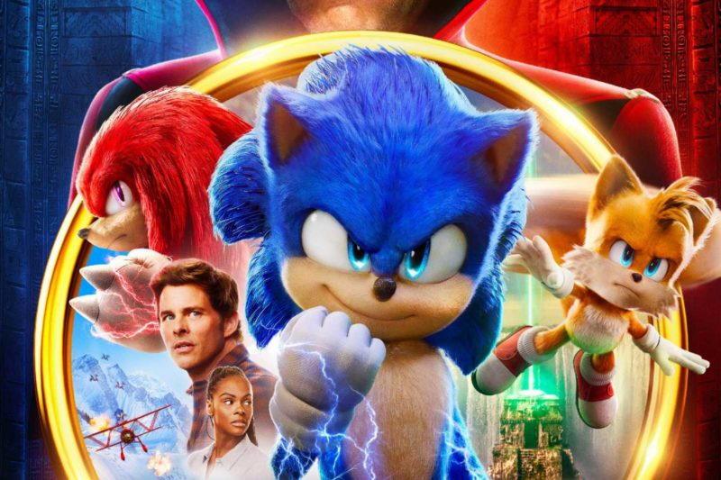

Sonic 2
SINOPSE:
O Dr. Robotnik retorna à procura de uma esmeralda mística que tem o poder de destruir civilizações.
Para detê-lo, Sonic se une a seu antigo parceiro, Tails, e parte em uma jornada para encontrar a joia
antes que ela caia em mãos erradas.